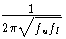

| RiCi = , | (28) |
In the Appendix, I provide a listing of a computer program to calculate
the RiCi values given the upper and lower frequencies and the n
value. In table 1, I give some calculated values for some networks of
interest to hams, and their theoretical sideband suppression. These
theoretical results will of course be best cases assuming perfect
components.
| fl | fu | n | Sup(dB) | f1 | f2 | f3 | f4 | f5 | f6 | f7 | f8 |
| 300 | 3000 | 4 | 40.5 | 332.2 | 629.8 | 1429.0 | 2709.0 | - | - | - | - |
| 300 | 3000 | 5 | 52.1 | 320.5 | 500.7 | 948.7 | 1797.6 | 2808.1 | - | - | - |
| 300 | 3000 | 6 | 63.7 | 314.2 | 435.5 | 720.3 | 1249.5 | 2066.8 | 2864.5 | - | - |
| 300 | 3000 | 7 | 75.4 | 310.4 | 397.8 | 595.3 | 948.7 | 1511.8 | 2262.4 | 2899.4 | - |
| 300 | 3000 | 8 | 87.0 | 308.0 | 374.0 | 519.4 | 771.2 | 1167.0 | 1732.7 | 2406.2 | 2922.5 |
| 200 | 4000 | 5 | 42.9 | 219.5 | 398.4 | 894.4 | 2008.1 | 3645.0 | - | - | - |
| 200 | 4000 | 6 | 52.7 | 213.5 | 332.1 | 633.1 | 1263.6 | 2408.9 | 3747.8 | - | - |
| 200 | 4000 | 7 | 62.5 | 209.9 | 294.6 | 497.5 | 894.4 | 1608.2 | 2715.5 | 3812.0 | - |
| 200 | 4000 | 8 | 72.2 | 207.5 | 271.2 | 417.8 | 689.9 | 1159.6 | 1915.0 | 2949.6 | 3854.8 |
| 150 | 6000 | 6 | 44.7 | 163.6 | 287.7 | 628.9 | 1431.1 | 3128.3 | 5500.9 | - | - |
| 150 | 6000 | 7 | 53.1 | 160.0 | 247.7 | 471.0 | 948.7 | 1910.7 | 3633.0 | 5626.4 | - |
| 150 | 6000 | 8 | 61.5 | 157.6 | 223.1 | 381.3 | 696.7 | 1291.9 | 2360.2 | 4033.2 | 5710.4 |
In passing, I note that Saraga's Taylor approximation[3] is given by simply choosing all the RiCi values to be the same and equal to  . Also, if maximum suppression is needed at a particular frequency (for example if you wanted to use audio tones in a single-sideband transmitter to produce frequency shift keying), it is simple to select RiCi values appropriate for these frequencies, and then optimize the other network sections.